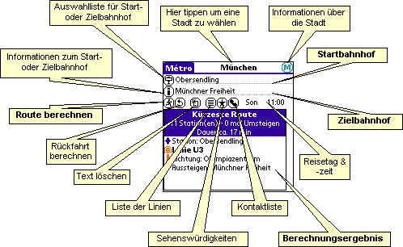

| Métro Anleitung |
| Métro Anleitung |
| 1-Bild Anleitung |
Palm |
||
PocketPC
|
||
| Routensuche
|
Die einfache Methode: Sie schreiben die Namen der
Abfahrts- und Zielhaltestelle (Sie brauchen nur die ersten Buchstaben
eingeben, "Métro" wird die Namen vervollständigen) und "tippen" dann
auf  (Start).
(Start).
Wenn die Option in den Voreinstellungen (siehe unten) aktiviert ist, wird
der Name der ersten passenden Haltestelle automatisch vom Programm eingefügt
wärend Sie Buchstaben im Feld eingeben.
Die komfortable Methode: "Tippen" Sie auf
 (Haltestelle), eine Liste
mit allen Haltestellen erscheint. Wählen Sie einfach die aus, nach der Sie
suchen; damit ist der Startbahnhof ausgewählt. Sie können ebenso den
Zielbahnhof wählen. Dann "tippen" sie auf
(Haltestelle), eine Liste
mit allen Haltestellen erscheint. Wählen Sie einfach die aus, nach der Sie
suchen; damit ist der Startbahnhof ausgewählt. Sie können ebenso den
Zielbahnhof wählen. Dann "tippen" sie auf  (Start).
(Start).
intelligente Hilfe: wie oben, aber bevor sie
auf  "tippen", geben sie
die ersten Buchstaben der Station ein. Die zu Ihrer Eingabe passende
Liste wird dann angezeigt.
"tippen", geben sie
die ersten Buchstaben der Station ein. Die zu Ihrer Eingabe passende
Liste wird dann angezeigt.
Dauerhafte Hilfe: nachdem die Liste (wie oben) angezeigt ist, geben Sie einfach weiteren Text in die entsprechenden Felder ein. Die Liste wird dann weiter angepasst.
Die schnellste Lösung: schreiben Sie die ersten Buchstaben des Abfahrtsbahnhofs und dann das Graffiti Return-Zeichen, schreiben Sie dann die ersten Buchstaben des Zielbahnhofs und dann nochmal das Graffiti Return-Zeichen: Die Berechnung ist fertig!.
Das Sahnehäubchen: das Programm merkt
sicht die zuletzt benutzten Stationen. Tippen Sie doppelt auf den
 (Stop) Button um die
History anzeigen zu lassen.
(Stop) Button um die
History anzeigen zu lassen.
Einhändige Bedienung auf Handera- und Sony-Geräten: drücken Sie das JogDial, suchen Sie den Start in der Liste (scrollen Sie mit dem auf/ab Button und ändern Sie die Auswahl mit dem JogDial), drücken Sie wieder um das Ziel zu wählen, (selbe Vorgehensweise), nochmal drücken um die Berechnung zu starten und scrollen Sie durch die Ergebnisliste mit dem JogDial.
Einhändige Bedienung auf palmOne-Geräten (Tungsten & Treo 6xx): drücken Sie den "Select"-Button, suchen Sie den Start in der Liste (scrollen Sie mit dem auf/ab Button und ändern Sie die Auswahl mit dem links/rechts Button), drücken Sie nochmal "Select" um das Ziel zu wählen (selbe Vorgehensweise), nochmal drücken um die Berechnung zu starten und scrollen Sie durch die Ergebnisliste mit dem Navigator.
Mehrfachhalte: auf PocketPC-Geräten (nicht Palm) können Sie zwei oder mehr Haltestellen als Start- oder Endpunkt angeben (nützlich, wenn Sie nahe zweier Haltestellen sind und nicht wissen, über welche Sie schneller an Ihr Ziel kommen). Geben Sie die Namen der betreffenden Haltestellen getrennt durch ein Semikolon (";") ein. Sie können sogar die Zeit angeben, die zu jedem der Halte zu laufen ist, indem Sie ein "%" und dahinter die Zeit in Minuten angeben (Beispiel: "République%5;Goncourt%3", bedeutet: ich bin 5 Min. von République und 3 Min. von Goncourt entfernt).
In einigen Städten (z.B. Paris), können sie auch nach dem Namen einer Sehenswürdigkeit suchen (z.B. dem Eiffelturm). Diese Stationen werden dann mit Fettschrift angezeigt.
Tippen Sie auf  (Info) um
Informationen über die Start- oder Ziel-Station anzuzeigen (je nachdem wo der
Cursor steht). An den Sehenswürdigkeiten der "Touristen" Datenbanken erhalten
Sie auch Informationen wie Adresse, Telefonnummer, Öffnungszeiten ...
(Info) um
Informationen über die Start- oder Ziel-Station anzuzeigen (je nachdem wo der
Cursor steht). An den Sehenswürdigkeiten der "Touristen" Datenbanken erhalten
Sie auch Informationen wie Adresse, Telefonnummer, Öffnungszeiten ...
| Rückfahrt
|
Mit  (Rückfahrt) können
Sie einfach die Rückfahrt berechnen, ohne die Stationsnamen neu eingeben zu
müssen.
(Rückfahrt) können
Sie einfach die Rückfahrt berechnen, ohne die Stationsnamen neu eingeben zu
müssen.
| Löschen
|
Mit  (Löschen) setzten
Sie die Oberfläche von "Métro" zurück: Abfahrts- und Zielhaltestelle werden
gelöscht, ebenso die Liste der Stationsnamen und die Ergebnisliste. Über die "Einstellungen"
kann man vorgeben, ob auch die Fahrzeit auf die aktuelle Uhrzeit gesetzt wird.
(Löschen) setzten
Sie die Oberfläche von "Métro" zurück: Abfahrts- und Zielhaltestelle werden
gelöscht, ebenso die Liste der Stationsnamen und die Ergebnisliste. Über die "Einstellungen"
kann man vorgeben, ob auch die Fahrzeit auf die aktuelle Uhrzeit gesetzt wird.
| Fahrtzeit |
Dieses Feature ist nur für einige Streckennetze verfügbar. Werden Streckennetze für diese Städte berechnet, erscheinen Wochentag und Uhrzeit auf dem Bildschirm. Tippen sie auf diese Felder um die geplante Fahrzeit einzustellen.
Zur eingestellten Zeit sind manche Linien nicht in Betrieb; "Métro" berücksichtigt dies beim Berechnen der Routen.
| Linien
|
Der  Button gibt Ihnen
eine Liste mit allen Linien und den dazugehörigen Haltestellen (für einige
Städte zeigt der Titelhintergrund die Linienfarbe aus dem jeweiligen
Liniennetzplan). Sie können eine dieser Stationen antippen, um sie in die Felder
"Abfahrt" oder "Ankunft" einzutragen. (je nachdem wo der Cursor steht). Pfeile (hoch
oder runter) vor dem Namen der Haltestelle zeigen einen Halt in nur einer
Richtung.
Button gibt Ihnen
eine Liste mit allen Linien und den dazugehörigen Haltestellen (für einige
Städte zeigt der Titelhintergrund die Linienfarbe aus dem jeweiligen
Liniennetzplan). Sie können eine dieser Stationen antippen, um sie in die Felder
"Abfahrt" oder "Ankunft" einzutragen. (je nachdem wo der Cursor steht). Pfeile (hoch
oder runter) vor dem Namen der Haltestelle zeigen einen Halt in nur einer
Richtung.
Eine Linie ist nur "in Betrieb" (d.h. wird für die Berechnung benutzt), wenn im Kästchen links ein Häckchen ist. Ist dort ein "X", heißt das, die Linie verkehrt zur ausgewählten Zeit nicht. Sie können das Kästchen auch abwählen wenn die Linie in der Berechnung nicht berücksichtigt werden soll (beispielsweise im Falle einer temporären Unterbrechnung).
In einigen Städten zeigt ein Icon die "Art" der Beförderung (U-Bahn, Bahn,
Straßenbahn, Bus, Seilbahn oder Schiff) und die Linienfarbe. In diesem Fall
zeigt ein zweiter Klick auf den  Button eine Liste der "Transportarten" die Sie einfach die
entsprechenden Gruppen aktivieren/deaktivieren lässt: beispielsweise wenn Sie
nicht die NJ Transit lines in New York verwenden wollen, wählen Sie einfach
diese "Gruppe" in der Liste ab & das Programm wird sie dann nicht
berücksichtigen und die Berechnung wird etwas beschleunigt.
Button eine Liste der "Transportarten" die Sie einfach die
entsprechenden Gruppen aktivieren/deaktivieren lässt: beispielsweise wenn Sie
nicht die NJ Transit lines in New York verwenden wollen, wählen Sie einfach
diese "Gruppe" in der Liste ab & das Programm wird sie dann nicht
berücksichtigen und die Berechnung wird etwas beschleunigt.
Auf Palm-Geräten, der Zustand der Aktivierung für Liniengruppen wird gespeichert, jedoch nicht der für individuelle Linien.
| Sehenswürdigkeiten
|
In einigen Städten ist eine Liste der "Interesting places" (Sehenswürdigkeiten) enthalten. Darin sind viele touristisch interessante Orte aufgelistet. So können Sie auch Routen berechnen, wenn Sie nicht wissen, welches die nächstgelegene Station ist.
Um die Liste einzusehen, klicken Sie auf den  Button. Der Button ist grau, wenn keine touristisch
interessanten Orte in der aktuellen Datenbank aufgeführt werden.
Button. Der Button ist grau, wenn keine touristisch
interessanten Orte in der aktuellen Datenbank aufgeführt werden.
| Adresse
|
Sie haben vielleicht das kleine
 Icon
bemerkt: Sie können es verwenden, um eine Route von oder zu einer Adresse aus
Ihrem Adressbuch zu berechnen. Wenn Sie auf den Button "tippen", wird eine Liste
all Ihrer Kontakte aus Ihrem Adressbuch angezeigt, die ein "Metro"-Feld
enthalten. Wenn Sie einen der Namen auswählen, erscheint er im "Start"- oder "Ziel"-Feld,
angeführt von einem "@".
Icon
bemerkt: Sie können es verwenden, um eine Route von oder zu einer Adresse aus
Ihrem Adressbuch zu berechnen. Wenn Sie auf den Button "tippen", wird eine Liste
all Ihrer Kontakte aus Ihrem Adressbuch angezeigt, die ein "Metro"-Feld
enthalten. Wenn Sie einen der Namen auswählen, erscheint er im "Start"- oder "Ziel"-Feld,
angeführt von einem "@".
Sie können auch direkt einen Namen aus Ihrem Adressbuch im "Start"- oder "Ziel"-Feld eingeben (mit einem "@" vorneweg). Die Funktion "Automatisch vervollständigen" ist dann verfügbar, wenn die Option in den Voreinstellungen (siehe unten) aktiviert ist.
Damit dieses Feature funktioniert:
Auf Palm-Geräten, Sie müssen im Adressbuch ein benutzerdefiniertes Feld namens "Metro" anlegen (sehen Sie im Handbuch Ihres Gerätes nach, wie das geht) und die zugehörige Haltestelle eingeben. Sie können mehr als eine Haltestelle eingeben, getrennt durch ein Semikolon (";").
Sie können den Namen der Stadt, zu dem die
Haltestelle gehört, eingeben: führen Sie den Haltestellen-Namen mit dem
Städtenamen oder deren ersten Buchstaben (genau wie er im Programm geschrieben
wird) gefolgt von einem Doppelpunkt (":") an, der Kontakt wird in Fettschrift
angezeigt, wenn die aktuelle Stadt mit der im Kontakt hinterlegten Stadt
übereinstimmt. Beispiel: Paris:République;Gare de l'Est ("Paris"
passt auf Paris und auf die Paris-Bus Datenbank).
Sie können auch die Zeit angeben, die zwischen
der Kontaktadresse und jedem Halt zu laufen ist: geben Sie die Zeit (in Minuten)
getrennt durch "%" direkt hinter dem Namen der Haltestelle an. Beispiel:
République%4;Gare de l'Est%10 (die Adresse ist 4 Minuten von "République"
und 10 Minuten von "Gare de l'Est" entfernt). Wenn Sie
keinen Wert eingeben, geht das Programm von 5 Minuten Fußweg aus.
Auf PocketPC-Geräten (außer mit Windows CE
2.0), fügen Sie Ihrem Kontak eine Notiz in der Form <METRO>Haltestelle1;Haltestelle2</METRO>
hinzu, wobei "Haltestelle1" und "Haltestelle2"
die nähesten Haltestellen der Kontaktadresse sind. Um zwischen Adressarten zu
unterscheiden, können Sie bis zu 3 verschiedene "Felder" anlegen: <METRO
TYPE="BUSINESS">Haltestelle1</METRO> für die Geschäftsadresse,
<METRO TYPE="HOME">Haltestelle2</METRO> für die Adresse zuhause
und <METRO TYPE="OTHER">Haltestelle3</METRO> für eine
weitere Adresse.
Mit folgender Syntax können Sie die Stadt, für die die Haltestelle gilt,
angeben: <METRO CITY="Städtename">Haltestelle</METRO> (Beispiel:
<METRO CITY="Paris">République</METRO>). In diesem Fall
wird die Kontaktliste nur Kontakte aus der gerade aktiven Stadt enthalten.
Natürlich können Sie die beiden Attribute "type" und "city"
im selben Tag verwenden (Beispiel: <METRO TYPE="BUSINESS"
CITY="Paris">République</METRO>)
Sie können auch die Zeit angeben, die zwischen
der Kontaktadresse und jedem Halt zu laufen ist: geben Sie die Zeit (in Minuten)
getrennt durch "%" direkt hinter dem Namen der Haltestelle an. Beispiel:
<METRO CITY="Paris">République%4;Gare de l'Est%10</METRO> (die
Adresse ist 4 Minuten von "République" und 10 Minuten von
"Gare de l'Est" entfernt). Wenn Sie keinen Wert eingeben,
geht das Programm von 5 Minuten Fußweg aus.
Auf diesen Geräten ist die Kontaktliste erweiterbar und sortierbar.
| Routenberechnung |
Wenn Sie  (Start) anklicken
(oder einen Zeilenvorschub in "An:" eingeben), wird die Routenberechnung
gestartet. Wenn diese mehr als 2 Sekunden benötigt, wird ein Vorschrittsbalken
eingeblendet. Mit einem Klick auf den Balken kann die Berechnung gestoppt werden
und es wird die bisher beste gefundene Route ausgegeben.
(Start) anklicken
(oder einen Zeilenvorschub in "An:" eingeben), wird die Routenberechnung
gestartet. Wenn diese mehr als 2 Sekunden benötigt, wird ein Vorschrittsbalken
eingeblendet. Mit einem Klick auf den Balken kann die Berechnung gestoppt werden
und es wird die bisher beste gefundene Route ausgegeben.
Nach der Suche werden 1 oder 2 verschiedene Routen angezeigt: Die kürzeste Route und die Route mit den wenigsten Umsteigevorgängen. Manchmal benötigen beide dieselbe Zeit und gleich viele Umsteigevorgänge, unterscheiden sich aber doch in einigen Details.
In einigen Städten weist der Balken links des Liniennamens die Farbe dieser Linie auf. Weiterhin kann ein Icon die "Art" der Beförderung (U-Bahn, Bahn, Straßenbahn, Bus, Seilbahn oder Schiff) anzeigen.
PalmOS: Tippen Sie einmal in die Ergebnisliste, um sie ins Clipboard zu kopieren. Sie können sie dann in ein Memo oder eine Mail einfügen.
Tippen Sie einmal auf die Icons (linke Spalte) um detaillierte Informationen zur Route zu bekommen:
| Information
|
Mit  erhalten sie weitere
Informationen über das Streckennetz, ebenso wie die Namen der Leute, die
geholfen haben, es zu erstellen. Zeigt auch das Ausgabedatum der Stadtdatei (nützlich,
um zu überprüfen, ob man die neueste Version hat).
erhalten sie weitere
Informationen über das Streckennetz, ebenso wie die Namen der Leute, die
geholfen haben, es zu erstellen. Zeigt auch das Ausgabedatum der Stadtdatei (nützlich,
um zu überprüfen, ob man die neueste Version hat).
| Optionen |
Im Menü "Optionen" können Sie mit "Einstellungen" auswählen, wie detailliert die Ergebnisse angezeigt werden sollen:
Für diejenigen, die nicht wissen, wie die Menüs am Palm aufzurufen sind: tippen Sie auf den Softbutton unten links des Graffiti-Bereichs ... Und machen Sie eine Pause und lesen das Handbuch Ihres Gerätes :-)
Tippen Sie  (OK) um die
Änderungen zu sichern oder
(OK) um die
Änderungen zu sichern oder  (Abbrechen) um die Änderungen zu verwerfen.
(Abbrechen) um die Änderungen zu verwerfen.
Auf PocketPC können Sie auch:
windows/fonts auf
Ihrem PDA und wählen sie sie an!"Streckennetze" zeigt die Liste aller Städte, die Sie für "Métro" installiert haben.
Sie können die Liste der "Streckennetze" auch einfach über "tippen" auf den Städtenamen im "Métro"-Titel aufrufen.
Ein kleines " " nach dem
Städtenamen markiert eine veraltete Datenbank: Sie können Sie löschen und eine
neuere installieren, um sie benutzen zu können. Städtedatenbanken, die auf einer
Erweiterungskarte gefunden werden (nur im Verzeichnis
" nach dem
Städtenamen markiert eine veraltete Datenbank: Sie können Sie löschen und eine
neuere installieren, um sie benutzen zu können. Städtedatenbanken, die auf einer
Erweiterungskarte gefunden werden (nur im Verzeichnis
/PALM/Programs/metro), werden mit einem speziellen Icon
angezeigt.
| PocketPC Optionen |
Sende Anmerkungen
Diese erstellt eine neue Mail, in der Sie Anmerkungen zum Programm loswerden
(oder einfach Danke sagen), und an Frank senden können.
Die Métro-Mailingliste abonnieren
Diese erstellt eine neue Mail, die Ihre Adresse bei der Mailingliste
registriert. In dieser kündigen wir jedes neue Release an, das wir
veröffentlichen!
Empfange Streckennetze & versende aktuelles Streckennetz
Diese zwei 2 Optionen lassen Sie Städtedatenbanken mit anderen
PocketPC-Nutzern per Infrarot austauschen.
Deutsche Übersetzung durch Alexander
Schinner
Überarbeitung der deutschen Übersetzung durch
Stefan
Hauser und
Christian
Eyrich.